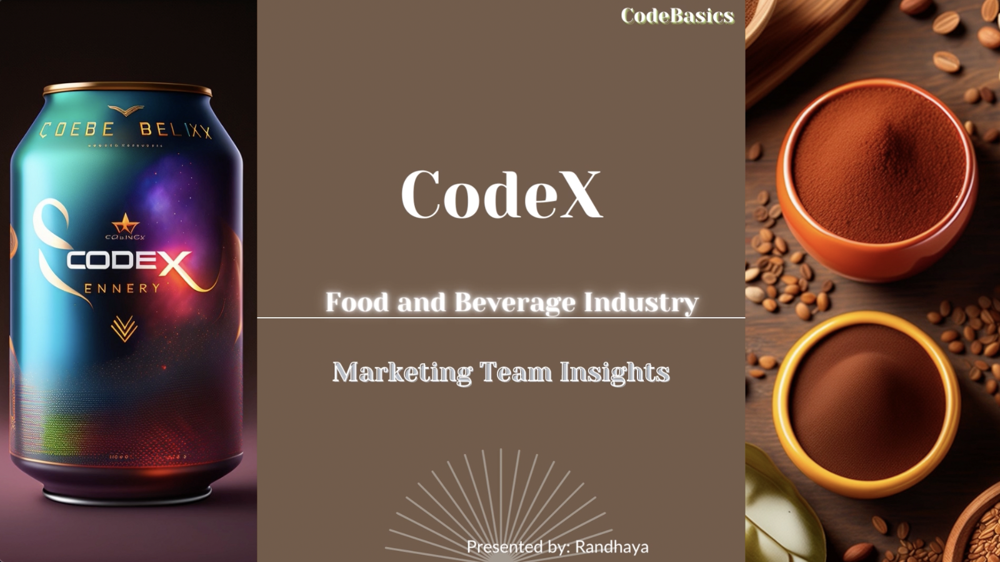

About Me
I am Randhaya, an aspiring data analyst currently thriving in an exciting data
analytics internship. My journey began while pursuing my Master's in Computer
Application, where I simultaneously shared my love for mathematics by teaching
it to eager minds. During this time, I delved into the world of SQL and Tableau,
which sparked my curiosity in data analysis.
In 2022, I embarked on a quest to explore this newfound passion further. Since then,
I have been on a relentless pursuit of knowledge, honing my skills in Python, SQL,
Tableau, and Excel. My projects have provided me with invaluable experiences, as I
worked with real datasets to unearth meaningful insights.
Now, I am eagerly seeking the perfect opportunity in the realm of data analytics,
where I can put my knowledge to use and become an asset to a dynamic organization.
Beyond my technical prowess, you will find me to be a friendly, energetic, and highly
motivated individual, ready to learn and grow alongside talented colleagues.
I invite you to explore my portfolio and witness my journey as a data analyst. Thank you
for joining me on this exciting adventure!
Projects
Providing Insights to the
Marketing Team in Food & Beverage Industry

Uncover crucial information about customers, including demographic insights, consumer preferences, competition analysis, and potential areas for product development. Based on analysis, recommendations include reducing sugar content, incorporating natural ingredients, and promoting special offers to drive business growth and meet customer needs in the Indian market.
SKILLS USED
SQL, Tableau, Conva and Communication Skill